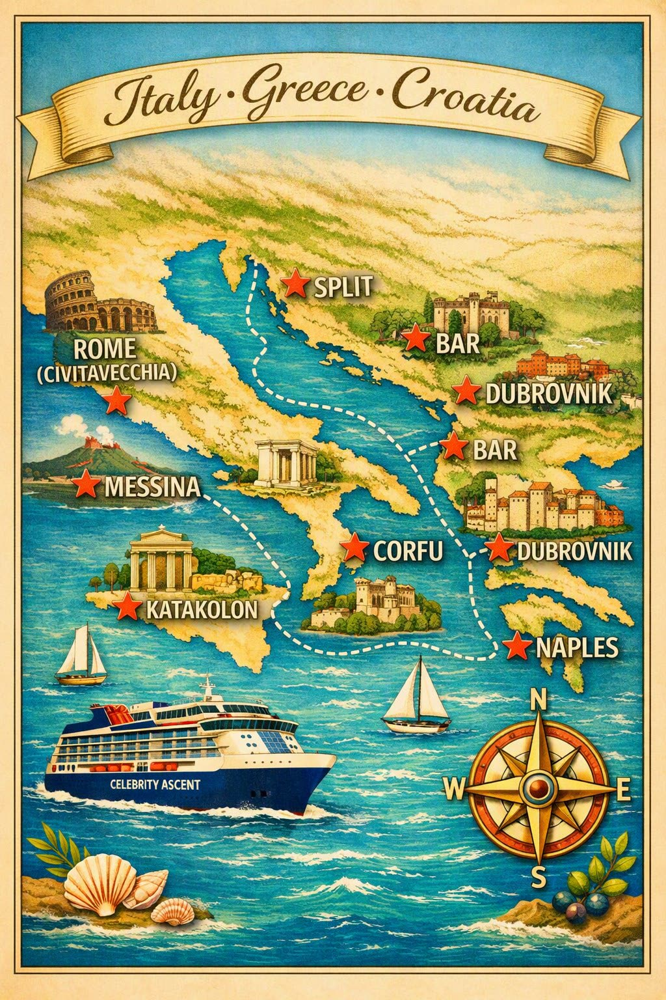
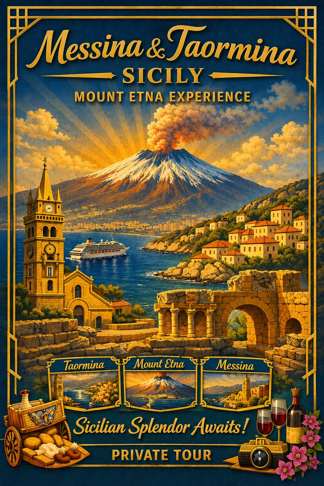
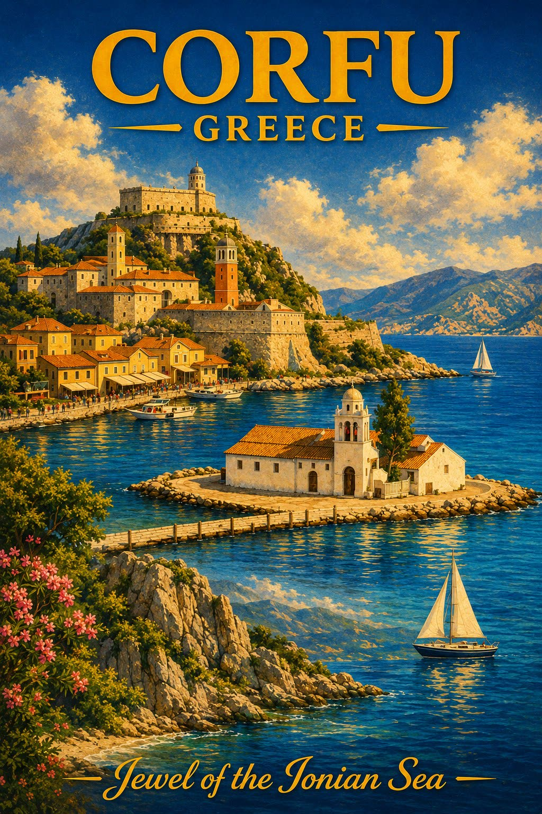
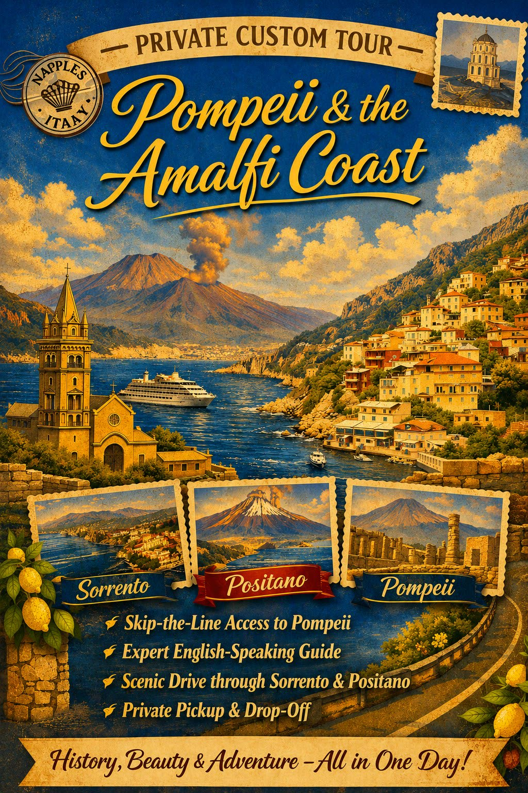
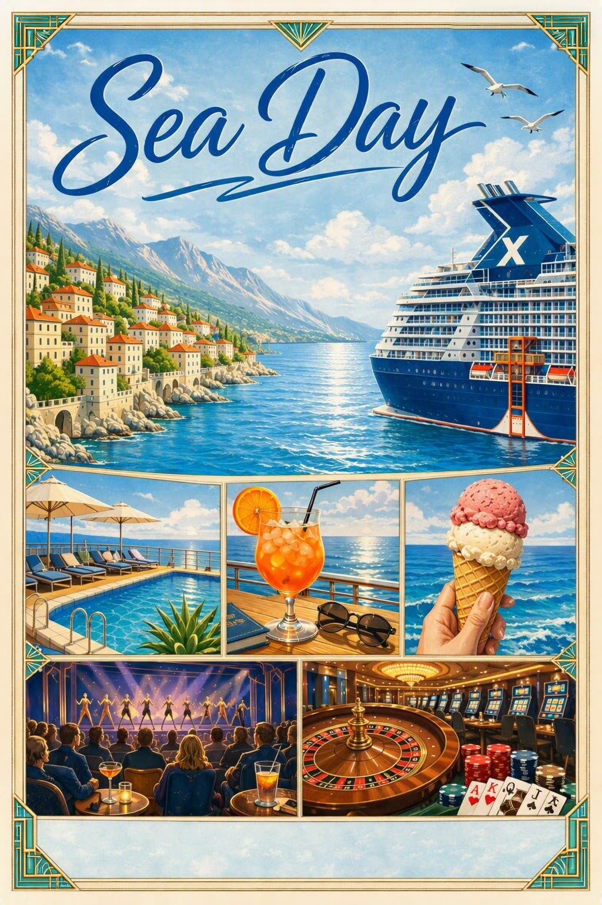
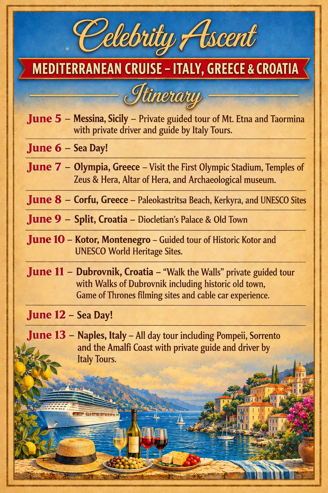
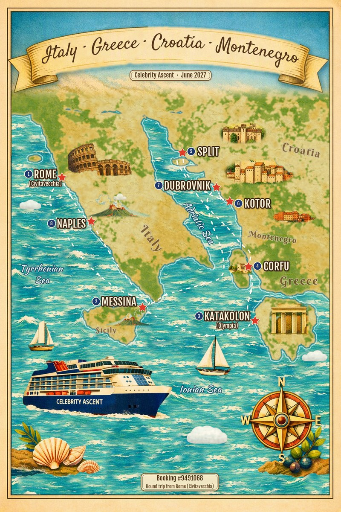
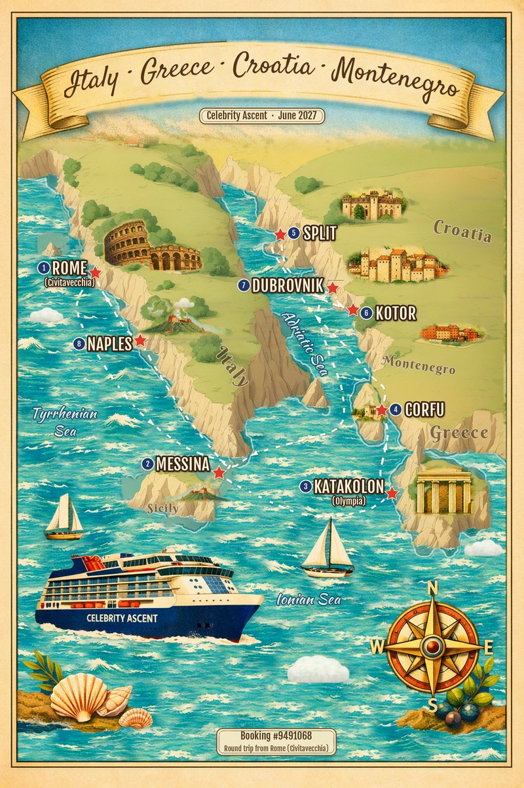
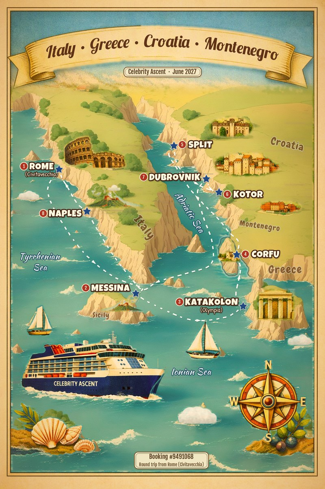

Asher's Trip Book
Draft for review. Scroll through all 20 pages, then the map options at the bottom.
Page 1

Page 2
Page 3
Page 4
Page 5
Page 6
Page 7
Page 8

Page 9
Page 10

Page 11
Page 12
Page 13
Page 14
Page 15

Page 16
Page 17

Page 18

Page 19
Page 20
New map options
Whimsical like the original, with the correct ports in sail order.

Option A: closest to the original

Option B: painted hills

Option C: softest, most kid-friendly